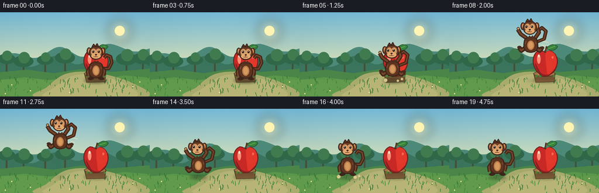
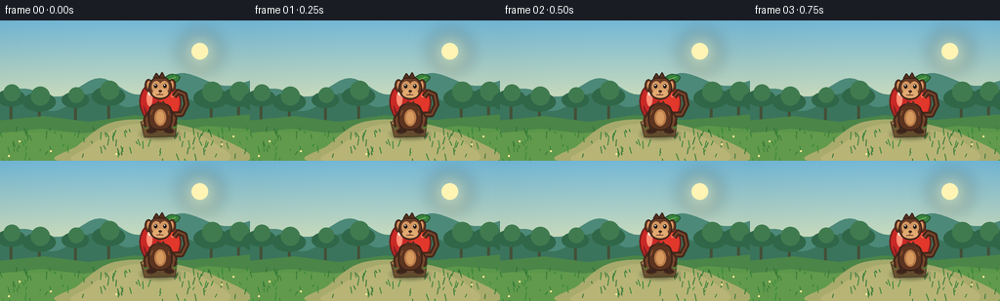

CODING AGENTS AS PIXEL WORLD MODELS
traex/GPT-5.6-Sol · dynamic_spatial_relationship_0061
点击播放 · 原生 RGB 像素
逐轮保存的候选
回放视频、检查图与代码变化。
每份候选均可单独播放。实际图片检查记录在下方工具轨迹中。
候选 01播放与检查图
点击播放 · 原生 RGB 像素


展开代码变化
--- 上一保存版本
+++ 本次保存版本
@@ -0,0 +1,260 @@
+from pathlib import Path
+import math
+import numpy as np
+from PIL import Image, ImageDraw, ImageFilter
+import artifact_io
+
+W, H, N = 256, 144, 20
+S = 4
+rng = np.random.default_rng(6106)
+
+# Scaled drawing helpers for clean antialiased geometry.
+def sc(v): return int(round(v * S))
+def box(b): return tuple(sc(v) for v in b)
+def pts(p): return [(sc(x), sc(y)) for x, y in p]
+
+def ellipse(d, b, fill, outline=None, width=1):
+ d.ellipse(box(b), fill=fill, outline=outline, width=sc(width) if outline else 1)
+def polygon(d, p, fill, outline=None, width=1):
+ q = pts(p); d.polygon(q, fill=fill)
+ if outline: d.line(q+[q[0]], fill=outline, width=sc(width), joint='curve')
+def line(d, p, fill, width=1, joint='curve'):
+ d.line(pts(p), fill=fill, width=sc(width), joint=joint)
+
+def closed_smooth(points, samples=12):
+ """Closed Catmull-Rom spline, returned as a dense polygon."""
+ out=[]; n=len(points)
+ for i in range(n):
+ p0=np.array(points[(i-1)%n],float); p1=np.array(points[i],float)
+ p2=np.array(points[(i+1)%n],float); p3=np.array(points[(i+2)%n],float)
+ for j in range(samples):
+ t=j/samples
+ q=.5*((2*p1)+(-p0+p2)*t+(2*p0-5*p1+4*p2-p3)*t*t+(-p0+3*p1-3*p2+p3)*t*t*t)
+ out.append(tuple(q))
+ return out
+
+def soft_ellipse(img, b, color, blur=3):
+ layer=Image.new('RGBA', img.size, (0,0,0,0)); dd=ImageDraw.Draw(layer)
+ dd.ellipse(box(b), fill=color)
+ layer=layer.filter(ImageFilter.GaussianBlur(sc(blur)))
+ img.alpha_composite(layer)
+
+def draw_background(frame, t):
+ # Painterly dawn sky gradient with a gentle vignette/noise texture.
+ hh, ww = H*S, W*S
+ yy=np.arange(hh)[:,None]/hh
+ xx=np.arange(ww)[None,:]/ww
+ top=np.array([116,184,214.],float); bot=np.array([232,232,180.],float)
+ a=np.clip(yy/.74,0,1)[...,None]
+ arr=np.broadcast_to(top,(hh,ww,3)).copy()*(1-a)+np.broadcast_to(bot,(hh,ww,3))*a
+ vign=(np.abs(xx-.5)**1.7*15 + np.maximum(0,yy-.70)*12)[...,None]
+ arr-=vign
+ # fixed fine grain, avoids sterile flat fills
+ noise=np.random.default_rng(991).normal(0,1.1,(hh,ww,1))
+ arr=np.clip(arr+noise,0,255).astype(np.uint8)
+ frame.alpha_composite(Image.fromarray(arr,'RGB').convert('RGBA'))
+ d=ImageDraw.Draw(frame)
+ # Sunlit haze and layered hills.
+ soft_ellipse(frame, (185,12,225,52), (255,244,177,95), 9)
+ ellipse(d,(196,23,213,40),(255,244,180,170))
+ hills1=closed_smooth([(-20,91),(20,70),(61,78),(102,59),(142,76),(184,54),(230,67),(280,61),(280,120),(-20,120)],8)
+ polygon(d,hills1,(76,137,121,255))
+ hills2=closed_smooth([(-30,102),(14,83),(55,93),(96,74),(132,89),(172,73),(207,84),(250,70),(280,88),(280,122),(-30,122)],8)
+ polygon(d,hills2,(58,116,92,255))
+ # Distant orchard silhouettes; low contrast keeps heroes readable.
+ for x,y,r in [(11,79,15),(40,83,17),(77,81,14),(111,77,17),(216,79,18),(244,78,17),(268,82,20)]:
+ trunk=(68,80,55,255); foliage=(48,103,72,255)
+ line(d,[(x,y+5),(x,y+28)],trunk,3)
+ ellipse(d,(x-r,y-r*.55,x+r,y+r*.62),foliage)
+ ellipse(d,(x-r*.5,y-r*.9,x+r*.65,y+r*.25),(64,123,79,255))
+ # Ground bands.
+ polygon(d,[(-5,103),(45,98),(91,104),(138,97),(189,102),(260,96),(260,145),(-5,145)],(75,133,72,255))
+ polygon(d,[(-5,116),(42,111),(85,116),(128,109),(170,115),(212,108),(260,112),(260,145),(-5,145)],(91,151,74,255))
+ # Soft path to place the action in a clearing.
+ polygon(d,closed_smooth([(113,105),(161,103),(222,119),(248,145),(66,145),(80,128)],10),(165,169,107,255))
+ polygon(d,closed_smooth([(123,109),(160,107),(211,121),(228,145),(81,145),(92,129)],10),(180,178,117,255))
+ # Foreground grass blades, deterministic.
+ rr=np.random.default_rng(220)
+ for _ in range(105):
+ x=float(rr.uniform(0,W)); y=float(rr.uniform(111,145)); h=float(rr.uniform(2,8))
+ col=(48,111+int(rr.uniform(0,24)),54,180)
+ lean=float(rr.uniform(-2.5,2.5))
+ line(d,[(x,y),(x+lean,y-h)],col,1)
+ # Small flowers as restrained detail, no red circles that could read as apples.
+ for x,y in [(20,124),(52,134),(227,127),(239,119),(119,137),(9,139)]:
+ ellipse(d,(x-1,y-1,x+1,y+1),(248,221,123,235))
+ ellipse(d,(x-.45,y-.45,x+.45,y+.45),(255,250,194,255))
+
+def draw_stump(d):
+ # A low orchard stump/pedestal anchors the apple and makes it plainly stationary.
+ polygon(d,[(144,104),(181,104),(179,119),(148,120)],(113,82,50,255),(69,57,39,255),1)
+ ellipse(d,(144,100,181,110),(160,119,70,255),(73,59,40,255),1)
+ ellipse(d,(151,102,176,108),(185,142,84,255))
+ line(d,[(158,103),(154,106),(160,108)],(116,83,51,255),1)
+ line(d,[(169,103),(174,105),(168,108)],(116,83,51,255),1)
+ # moss rim
+ for x in [147,153,177]: ellipse(d,(x,107,x+4,111),(77,125,55,255))
+
+def draw_apple(frame, t):
+ d=ImageDraw.Draw(frame)
+ # stationary contact shadow and stump
+ soft_ellipse(frame,(143,112,185,121),(30,45,22,80),2.0)
+ d=ImageDraw.Draw(frame); draw_stump(d)
+ # Organic apple silhouette, roughly monkey-head sized for unambiguous object identity.
+ apple=[(164,68),(154,65),(146,72),(143,84),(147,97),(155,106),(164,109),
+ (173,106),(181,98),(185,84),(181,72),(173,66)]
+ silhouette=closed_smooth(apple,8)
+ polygon(d,silhouette,(201,41,38,255),(108,32,27,255),1.5)
+ # warm right lobe and shaded lower rim
+ polygon(d,closed_smooth([(165,69),(175,67),(182,75),(183,87),(178,99),(169,106),(166,94)],8),(226,55,43,220))
+ polygon(d,closed_smooth([(147,87),(151,101),(163,108),(176,103),(180,97),(170,106),(157,104)],8),(139,32,34,145))
+ # broad glossy highlight plus pinpoint gleam
+ ellipse(d,(150,72,156,88),(255,140,116,150))
+ ellipse(d,(151.5,72,154.5,77),(255,226,201,230))
+ ellipse(d,(175,75,178,79),(255,112,88,120))
+ # stem and subtly fluttering leaf
+ sway=math.sin(t*.7)*.8
+ line(d,[(164,69),(166+sway,58)],(75,48,30,255),3)
+ line(d,[(165,67),(167+sway,58)],(137,83,39,255),1)
+ leaf=closed_smooth([(167,61),(175+sway,55),(184+sway,58),(177+sway,65)],9)
+ polygon(d,leaf,(54,131,62,255),(35,83,42,255),1)
+ line(d,[(169,62),(180+sway,58)],(126,180,91,220),1)
+
+def limb(d, points, outer=7, inner=3):
+ line(d,points,(68,39,26,255),outer)
+ line(d,points,(117,69,42,255),inner)
+
+def draw_monkey(frame, x, ground_y, phase, t, face_left=False, squash=0.0):
+ """phase: idle, crouch, air, land, final. ground_y is the feet anchor (moves up in air)."""
+ d=ImageDraw.Draw(frame)
+ bob=math.sin(t*.85)*.7 if phase in ('idle','final') else 0
+ y=ground_y+bob
+ # pose controls
+ if phase=='air':
+ body_top=y-30; head_y=y-43
+ # swept-back tail with a lively curl (drawn behind body)
+ tail=[(x+8,y-21),(x+23,y-27),(x+26,y-40),(x+19,y-46),(x+14,y-42)]
+ limb(d,tail,6,2)
+ # arms reaching slightly into direction of travel (left)
+ limb(d,[(x-7,y-28),(x-17,y-35),(x-22,y-43)],7,3)
+ limb(d,[(x+7,y-28),(x+14,y-38),(x+11,y-46)],7,3)
+ # tucked legs
+ limb(d,[(x-7,y-13),(x-16,y-7),(x-20,y-12)],8,3)
+ limb(d,[(x+7,y-13),(x+15,y-7),(x+19,y-11)],8,3)
+ ellipse(d,(x-24,y-47,x-19,y-42),(210,160,102,255),(63,39,29,255),1)
+ ellipse(d,(x+8,y-49,x+14,y-44),(210,160,102,255),(63,39,29,255),1)
+ ellipse(d,(x-23,y-15,x-16,y-10),(72,43,29,255))
+ ellipse(d,(x+16,y-14,x+23,y-9),(72,43,29,255))
+ else:
+ crouch = phase in ('crouch','land')
+ body_top=y-(25 if crouch else 31); head_y=y-(37 if crouch else 44)
+ # tail curled up and away from target, preserving readable silhouette
+ tail=[(x+8,y-20),(x+22,y-20),(x+27,y-30),(x+25,y-40),(x+18,y-43),(x+14,y-38)]
+ limb(d,tail,6,2)
+ if crouch:
+ limb(d,[(x-7,y-21),(x-17,y-13),(x-18,y-5)],7,3)
+ limb(d,[(x+7,y-21),(x+16,y-13),(x+17,y-5)],7,3)
+ limb(d,[(x-6,y-10),(x-15,y-4),(x-20,y-3)],8,3)
+ limb(d,[(x+6,y-10),(x+15,y-4),(x+20,y-3)],8,3)
+ ellipse(d,(x-23,y-6,x-14,y-2),(64,38,27,255))
+ ellipse(d,(x+14,y-6,x+23,y-2),(64,38,27,255))
+ else:
+ # planted, relaxed stance
+ limb(d,[(x-7,y-25),(x-14,y-15),(x-13,y-7)],7,3)
+ limb(d,[(x+7,y-25),(x+14,y-16),(x+12,y-8)],7,3)
+ limb(d,[(x-6,y-11),(x-8,y-2)],8,3)
+ limb(d,[(x+6,y-11),(x+8,y-2)],8,3)
+ ellipse(d,(x-14,y-5,x-5,y),(60,37,27,255))
+ ellipse(d,(x+5,y-5,x+14,y),(60,37,27,255))
+ # pear-shaped torso (dark outline then warm inner fur)
+ torso=closed_smooth([(x,body_top),(x-10,body_top+4),(x-12,y-13),(x-8,y-6),(x,y-4),(x+8,y-6),(x+12,y-13),(x+10,body_top+4)],8)
+ polygon(d,torso,(92,52,32,255),(55,34,25,255),1.4)
+ ellipse(d,(x-6,body_top+6,x+6,y-8),(188,125,75,255))
+ ellipse(d,(x-4,body_top+8,x+4,y-10),(214,153,94,130))
+ # neck tuft
+ polygon(d,[(x-6,body_top+2),(x-2,body_top-3),(x,body_top+1),(x+3,body_top-3),(x+7,body_top+3)],(82,47,31,255))
+ # Head, ears, crown tuft
+ hx=x-1.5 if face_left else x
+ hy=head_y
+ ellipse(d,(hx-16,hy-12,hx-8,hy+1),(103,58,35,255),(55,35,26,255),1)
+ ellipse(d,(hx+8,hy-12,hx+16,hy+1),(103,58,35,255),(55,35,26,255),1)
+ ellipse(d,(hx-13.6,hy-10,hx-9.4,hy-2),(218,149,96,255))
+ ellipse(d,(hx+9.4,hy-10,hx+13.6,hy-2),(218,149,96,255))
+ ellipse(d,(hx-12,hy-15,hx+12,hy+9),(105,60,37,255),(53,34,25,255),1.3)
+ # facial mask with twin upper lobes and muzzle
+ ellipse(d,(hx-8.8,hy-10,hx+.4,hy+2),(211,152,99,255))
+ ellipse(d,(hx-.4,hy-10,hx+8.8,hy+2),(211,152,99,255))
+ ellipse(d,(hx-8,hy-2,hx+8,hy+7),(226,170,112,255))
+ # eye direction and expression
+ look=-1.4 if face_left else 0
+ ellipse(d,(hx-6.6+look,hy-7,hx-3.0+look,hy-2.7),(35,27,23,255))
+ ellipse(d,(hx+3.0+look,hy-7,hx+6.6+look,hy-2.7),(35,27,23,255))
+ ellipse(d,(hx-5.8+look,hy-6.4,hx-4.6+look,hy-5.2),(255,255,240,255))
+ ellipse(d,(hx+3.8+look,hy-6.4,hx+5.0+look,hy-5.2),(255,255,240,255))
+ ellipse(d,(hx-1.7+look*.2,hy-.8,hx+1.7+look*.2,hy+1.5),(67,39,30,255))
+ # smile
+ line(d,[(hx,hy+2),(hx-1,hy+4),(hx-4,hy+4)],(91,43,34,255),.7)
+ line(d,[(hx-1,hy+4),(hx+3,hy+4)],(91,43,34,255),.7)
+ # crown fur tufts
+ polygon(d,[(hx-7,hy-13),(hx-4,hy-18),(hx-1,hy-14),(hx+2,hy-19),(hx+5,hy-13)],(88,49,31,255),(54,34,25,255),1)
+ # tiny fur highlights
+ line(d,[(x-8,body_top+7),(x-10,body_top+12)],(145,87,50,170),1)
+ line(d,[(x+8,body_top+8),(x+9,body_top+12)],(145,87,50,140),1)
+
+def render(i):
+ t=i/4
+ frame=Image.new('RGBA',(W*S,H*S),(0,0,0,255))
+ draw_background(frame,t)
+
+ # Fixed object shadow / target object is always visible and stationary.
+ draw_apple(frame,t)
+
+ # Motion choreography: establish FRONT (occlusion), jump in one readable arc, settle LEFT.
+ if i <= 3:
+ x=164; gy=116; phase='idle'; face_left=False
+ elif i==4:
+ x=161; gy=116; phase='crouch'; face_left=True
+ elif 5 <= i <= 14:
+ u=(i-5)/9
+ # smooth horizontal travel, strong parabolic jump arc
+ ease=u*u*(3-2*u)
+ x=159+(83-159)*ease
+ gy=113-47*math.sin(math.pi*u)
+ phase='air'; face_left=True
+ elif i==15:
+ x=82; gy=116; phase='land'; face_left=False
+ else:
+ x=82; gy=115; phase='final'; face_left=False
+
+ # moving contact shadow: shrinks/fades with height, reinforces the jump physically.
+ if phase=='air':
+ lift=max(0,113-gy); rad=15*(1-lift/80); alpha=int(95*(1-lift/65))
+ soft_ellipse(frame,(x-rad,117-rad*.23,x+rad,117+rad*.23),(31,43,22,max(18,alpha)),2.2)
+ else:
+ soft_ellipse(frame,(x-16,115,x+16,121),(31,43,22,85),2.0)
+
+ # Dust puffs on takeoff and landing.
+ d=ImageDraw.Draw(frame)
+ if i in (4,5):
+ for dx,dy,r in [(-12,0,3),(9,1,2),(16,-2,2)]: ellipse(d,(x+dx-r,116+dy-r,x+dx+r,116+dy+r),(207,194,133,110))
+ if i in (15,16):
+ fade=1 if i==15 else .55
+ for dx,dy,r in [(-15,0,3),(13,1,2.7),(20,-1,2)]: ellipse(d,(x+dx-r,116+dy-r,x+dx+r,116+dy+r),(214,199,140,int(140*fade)))
+
+ # A few pale motion arcs in the middle of the leap, behind the character.
+ if 7 <= i <= 12:
+ d=ImageDraw.Draw(frame)
+ line(d,[(x+20,gy-23),(x+30,gy-21)],(241,229,174,75),1)
+ line(d,[(x+18,gy-17),(x+25,gy-15)],(241,229,174,55),1)
+
+ draw_monkey(frame,x,gy,phase,t,face_left)
+
+ # Warm foreground light and final downsample.
+ overlay=Image.new('RGBA',frame.size,(255,224,142,0))
+ od=ImageDraw.Draw(overlay); od.rectangle((0,sc(115),W*S,H*S),fill=(255,220,133,10))
+ frame=Image.alpha_composite(frame,overlay)
+ return np.asarray(frame.convert('RGB').resize((W,H),Image.Resampling.LANCZOS),dtype=np.uint8)
+
+frames=np.stack([render(i) for i in range(N)],axis=0)
+assert frames.shape==(20,144,256,3) and frames.dtype==np.uint8
+artifact_io.save(frames,Path(__file__).resolve().parent)
可观测工具轨迹
实际执行的命令与返回图片。
命令 1exit 0
/bin/bash -lc "cat prompt.txt && printf '\\n--- GENERATION_RULES ---\\n' && cat GENERATION_RULES.md && printf '\\n--- TASK_SPEC ---\\n' && cat task_spec.json"
命令 2exit 0
/bin/bash -lc "find . -maxdepth 2 -type f -printf '%p\\n' | sort && printf '\\n--- tools ---\\n' && command -v ffmpeg || true && command -v convert || true && command -v blender || true && command -v python3 || true"
命令 3exit 0
/bin/bash -lc 'cat artifact_io.py'
命令 4exit 0
/bin/bash -lc "cat > generate.py <<'PY'
from pathlib import Path
import math
import numpy as np
from PIL import Image, ImageDraw, ImageFilter
import artifact_io
W, H, N = 256, 144, 20
S = 4
rng = np.random.default_rng(6106)
# Scaled drawing helpers for clean antialiased geometry.
def sc(v): return int(round(v * S))
def box(b): return tuple(sc(v) for v in b)
def pts(p): return [(sc(x), sc(y)) for x, y in p]
def ellipse(d, b, fill, outline=None, width=1):
d.ellipse(box(b), fill=fill, outline=outline, width=sc(width) if outline else 1)
def polygon(d, p, fill, outline=None, width=1):
q = pts(p); d.polygon(q, fill=fill)
if outline: d.line(q+[q[0]], fill=outline, width=sc(width), joint='curve')
def line(d, p, fill, width=1, joint='curve'):
d.line(pts(p), fill=fill, width=sc(width), joint=joint)
def closed_smooth(points, samples=12):
\"\"\"Closed Catmull-Rom spline, returned as a dense polygon.\"\"\"
out=[]; n=len(points)
for i in range(n):
p0=np.array(points[(i-1)%n],float); p1=np.array(points[i],float)
p2=np.array(points[(i+1)%n],float); p3=np.array(points[(i+2)%n],float)
for j in range(samples):
t=j/samples
q=.5*((2*p1)+(-p0+p2)*t+(2*p0-5*p1+4*p2-p3)*t*t+(-p0+3*p1-3*p2+p3)*t*t*t)
out.append(tuple(q))
return out
def soft_ellipse(img, b, color, blur=3):
layer=Image.new('RGBA', img.size, (0,0,0,0)); dd=ImageDraw.Draw(layer)
dd.ellipse(box(b), fill=color)
layer=layer.filter(ImageFilter.GaussianBlur(sc(blur)))
img.alpha_composite(layer)
def draw_background(frame, t):
# Painterly dawn sky gradient with a gentle vignette/noise texture.
hh, ww = H*S, W*S
yy=np.arange(hh)[:,None]/hh
xx=np.arange(ww)[None,:]/ww
top=np.array([116,184,214.],float); bot=np.array([232,232,180.],float)
a=np.clip(yy/.74,0,1)[...,None]
arr=np.broadcast_to(top,(hh,ww,3)).copy()*(1-a)+np.broadcast_to(bot,(hh,ww,3))*a
vign=(np.abs(xx-.5)**1.7*15 + np.maximum(0,yy-.70)*12)[...,None]
arr-=vign
# fixed fine grain, avoids sterile flat fills
noise=np.random.default_rng(991).normal(0,1.1,(hh,ww,1))
arr=np.clip(arr+noise,0,255).astype(np.uint8)
frame.alpha_composite(Image.fromarray(arr,'RGB').convert('RGBA'))
d=ImageDraw.Draw(frame)
# Sunlit haze and layered hills.
soft_ellipse(frame, (185,12,225,52), (255,244,177,95), 9)
ellipse(d,(196,23,213,40),(255,244,180,170))
hills1=closed_smooth([(-20,91),(20,70),(61,78),(102,59),(142,76),(184,54),(230,67),(280,61),(280,120),(-20,120)],8)
polygon(d,hills1,(76,137,121,255))
hills2=closed_smooth([(-30,102),(14,83),(55,93),(96,74),(132,89),(172,73),(207,84),(250,70),(280,88),(280,122),(-30,122)],8)
polygon(d,hills2,(58,116,92,255))
# Distant orchard silhouettes; low contrast keeps heroes readable.
for x,y,r in [(11,79,15),(40,83,17),(77,81,14),(111,77,17),(216,79,18),(244,78,17),(268,82,20)]:
trunk=(68,80,55,255); foliage=(48,103,72,255)
line(d,[(x,y+5),(x,y+28)],trunk,3)
ellipse(d,(x-r,y-r*.55,x+r,y+r*.62),foliage)
ellipse(d,(x-r*.5,y-r*.9,x+r*.65,y+r*.25),(64,123,79,255))
# Ground bands.
polygon(d,[(-5,103),(45,98),(91,104),(138,97),(189,102),(260,96),(260,145),(-5,145)],(75,133,72,255))
polygon(d,[(-5,116),(42,111),(85,116),(128,109),(170,115),(212,108),(260,112),(260,145),(-5,145)],(91,151,74,255))
# Soft path to place the action in a clearing.
polygon(d,closed_smooth([(113,105),(161,103),(222,119),(248,145),(66,145),(80,128)],10),(165,169,107,255))
polygon(d,closed_smooth([(123,109),(160,107),(211,121),(228,145),(81,145),(92,129)],10),(180,178,117,255))
# Foreground grass blades, deterministic.
rr=np.random.default_rng(220)
for _ in range(105):
x=float(rr.uniform(0,W)); y=float(rr.uniform(111,145)); h=float(rr.uniform(2,8))
col=(48,111+int(rr.uniform(0,24)),54,180)
lean=float(rr.uniform(-2.5,2.5))
line(d,[(x,y),(x+lean,y-h)],col,1)
# Small flowers as restrained detail, no red circles that could read as apples.
for x,y in [(20,124),(52,134),(227,127),(239,119),(119,137),(9,139)]:
ellipse(d,(x-1,y-1,x+1,y+1),(248,221,123,235))
ellipse(d,(x-.45,y-.45,x+.45,y+.45),(255,250,194,255))
def draw_stump(d):
# A low orchard stump/pedestal anchors the apple and makes it plainly stationary.
polygon(d,[(144,104),(181,104),(179,119),(148,120)],(113,82,50,255),(69,57,39,255),1)
ellipse(d,(144,100,181,110),(160,119,70,255),(73,59,40,255),1)
ellipse(d,(151,102,176,108),(185,142,84,255))
line(d,[(158,103),(154,106),(160,108)],(116,83,51,255),1)
line(d,[(169,103),(174,105),(168,108)],(116,83,51,255),1)
# moss rim
for x in [147,153,177]: ellipse(d,(x,107,x+4,111),(77,125,55,255))
def draw_apple(frame, t):
d=ImageDraw.Draw(frame)
# stationary contact shadow and stump
soft_ellipse(frame,(143,112,185,121),(30,45,22,80),2.0)
d=ImageDraw.Draw(frame); draw_stump(d)
# Organic apple silhouette, roughly monkey-head sized for unambiguous object identity.
apple=[(164,68),(154,65),(146,72),(143,84),(147,97),(155,106),(164,109),
(173,106),(181,98),(185,84),(181,72),(173,66)]
silhouette=closed_smooth(apple,8)
polygon(d,silhouette,(201,41,38,255),(108,32,27,255),1.5)
# warm right lobe and shaded lower rim
polygon(d,closed_smooth([(165,69),(175,67),(182,75),(183,87),(178,99),(169,106),(166,94)],8),(226,55,43,220))
polygon(d,closed_smooth([(147,87),(151,101),(163,108),(176,103),(180,97),(170,106),(157,104)],8),(139,32,34,145))
# broad glossy highlight plus pinpoint gleam
ellipse(d,(150,72,156,88),(255,140,116,150))
ellipse(d,(151.5,72,154.5,77),(255,226,201,230))
ellipse(d,(175,75,178,79),(255,112,88,120))
# stem and subtly fluttering leaf
sway=math.sin(t*.7)*.8
line(d,[(164,69),(166+sway,58)],(75,48,30,255),3)
line(d,[(165,67),(167+sway,58)],(137,83,39,255),1)
leaf=closed_smooth([(167,61),(175+sway,55),(184+sway,58),(177+sway,65)],9)
polygon(d,leaf,(54,131,62,255),(35,83,42,255),1)
line(d,[(169,62),(180+sway,58)],(126,180,91,220),1)
def limb(d, points, outer=7, inner=3):
line(d,points,(68,39,26,255),outer)
line(d,points,(117,69,42,255),inner)
def draw_monkey(frame, x, ground_y, phase, t, face_left=False, squash=0.0):
\"\"\"phase: idle, crouch, air, land, final. ground_y is the feet anchor (moves up in air).\"\"\"
d=ImageDraw.Draw(frame)
bob=math.sin(t*.85)*.7 if phase in ('idle','final') else 0
y=ground_y+bob
# pose controls
if phase=='air':
body_top=y-30; head_y=y-43
# swept-back tail with a lively curl (drawn behind body)
tail=[(x+8,y-21),(x+23,y-27),(x+26,y-40),(x+19,y-46),(x+14,y-42)]
limb(d,tail,6,2)
# arms reaching slightly into direction of travel (left)
limb(d,[(x-7,y-28),(x-17,y-35),(x-22,y-43)],7,3)
limb(d,[(x+7,y-28),(x+14,y-38),(x+11,y-46)],7,3)
# tucked legs
limb(d,[(x-7,y-13),(x-16,y-7),(x-20,y-12)],8,3)
limb(d,[(x+7,y-13),(x+15,y-7),(x+19,y-11)],8,3)
ellipse(d,(x-24,y-47,x-19,y-42),(210,160,102,255),(63,39,29,255),1)
ellipse(d,(x+8,y-49,x+14,y-44),(210,160,102,255),(63,39,29,255),1)
ellipse(d,(x-23,y-15,x-16,y-10),(72,43,29,255))
ellipse(d,(x+16,y-14,x+23,y-9),(72,43,29,255))
else:
crouch = phase in ('crouch','land')
body_top=y-(25 if crouch else 31); head_y=y-(37 if crouch else 44)
# tail curled up and away from target, preserving readable silhouette
tail=[(x+8,y-20),(x+22,y-20),(x+27,y-30),(x+25,y-40),(x+18,y-43),(x+14,y-38)]
limb(d,tail,6,2)
if crouch:
limb(d,[(x-7,y-21),(x-17,y-13),(x-18,y-5)],7,3)
limb(d,[(x+7,y-21),(x+16,y-13),(x+17,y-5)],7,3)
limb(d,[(x-6,y-10),(x-15,y-4),(x-20,y-3)],8,3)
limb(d,[(x+6,y-10),(x+15,y-4),(x+20,y-3)],8,3)
ellipse(d,(x-23,y-6,x-14,y-2),(64,38,27,255))
ellipse(d,(x+14,y-6,x+23,y-2),(64,38,27,255))
else:
# planted, relaxed stance
limb(d,[(x-7,y-25),(x-14,y-15),(x-13,y-7)],7,3)
limb(d,[(x+7,y-25),(x+14,y-16),(x+12,y-8)],7,3)
limb(d,[(x-6,y-11),(x-8,y-2)],8,3)
limb(d,[(x+6,y-11),(x+8,y-2)],8,3)
ellipse(d,(x-14,y-5,x-5,y),(60,37,27,255))
ellipse(d,(x+5,y-5,x+14,y),(60,37,27,255))
# pear-shaped torso (dark outline then warm inner fur)
torso=closed_smooth([(x,body_top),(x-10,body_top+4),(x-12,y-13),(x-8,y-6),(x,y-4),(x+8,y-6),(x+12,y-13),(x+10,body_top+4)],8)
polygon(d,torso,(92,52,32,255),(55,34,25,255),1.4)
ellipse(d,(x-6,body_top+6,x+6,y-8),(188,125,75,255))
ellipse(d,(x-4,body_top+8,x+4,y-10),(214,153,94,130))
# neck tuft
polygon(d,[(x-6,body_top+2),(x-2,body_top-3),(x,body_top+1),(x+3,body_top-3),(x+7,body_top+3)],(82,47,31,255))
# Head, ears, crown tuft
hx=x-1.5 if face_left else x
hy=head_y
ellipse(d,(hx-16,hy-12,hx-8,hy+1),(103,58,35,255),(55,35,26,255),1)
ellipse(d,(hx+8,hy-12,hx+16,hy+1),(103,58,35,255),(55,35,26,255),1)
ellipse(d,(hx-13.6,hy-10,hx-9.4,hy-2),(218,149,96,255))
ellipse(d,(hx+9.4,hy-10,hx+13.6,hy-2),(218,149,96,255))
ellipse(d,(hx-12,hy-15,hx+12,hy+9),(105,60,37,255),(53,34,25,255),1.3)
# facial mask with twin upper lobes and muzzle
ellipse(d,(hx-8.8,hy-10,hx+.4,hy+2),(211,152,99,255))
ellipse(d,(hx-.4,hy-10,hx+8.8,hy+2),(211,152,99,255))
ellipse(d,(hx-8,hy-2,hx+8,hy+7),(226,170,112,255))
# eye direction and expression
look=-1.4 if face_left else 0
ellipse(d,(hx-6.6+look,hy-7,hx-3.0+look,hy-2.7),(35,27,23,255))
ellipse(d,(hx+3.0+look,hy-7,hx+6.6+look,hy-2.7),(35,27,23,255))
ellipse(d,(hx-5.8+look,hy-6.4,hx-4.6+look,hy-5.2),(255,255,240,255))
ellipse(d,(hx+3.8+look,hy-6.4,hx+5.0+look,hy-5.2),(255,255,240,255))
ellipse(d,(hx-1.7+look*.2,hy-.8,hx+1.7+look*.2,hy+1.5),(67,39,30,255))
# smile
line(d,[(hx,hy+2),(hx-1,hy+4),(hx-4,hy+4)],(91,43,34,255),.7)
line(d,[(hx-1,hy+4),(hx+3,hy+4)],(91,43,34,255),.7)
# crown fur tufts
polygon(d,[(hx-7,hy-13),(hx-4,hy-18),(hx-1,hy-14),(hx+2,hy-19),(hx+5,hy-13)],(88,49,31,255),(54,34,25,255),1)
# tiny fur highlights
line(d,[(x-8,body_top+7),(x-10,body_top+12)],(145,87,50,170),1)
line(d,[(x+8,body_top+8),(x+9,body_top+12)],(145,87,50,140),1)
def render(i):
t=i/4
frame=Image.new('RGBA',(W*S,H*S),(0,0,0,255))
draw_background(frame,t)
# Fixed object shadow / target object is always visible and stationary.
draw_apple(frame,t)
# Motion choreography: establish FRONT (occlusion), jump in one readable arc, settle LEFT.
if i <= 3:
x=164; gy=116; phase='idle'; face_left=False
elif i==4:
x=161; gy=116; phase='crouch'; face_left=True
elif 5 <= i <= 14:
u=(i-5)/9
# smooth horizontal travel, strong parabolic jump arc
ease=u*u*(3-2*u)
x=159+(83-159)*ease
gy=113-47*math.sin(math.pi*u)
phase='air'; face_left=True
elif i==15:
x=82; gy=116; phase='land'; face_left=False
else:
x=82; gy=115; phase='final'; face_left=False
# moving contact shadow: shrinks/fades with height, reinforces the jump physically.
if phase=='air':
lift=max(0,113-gy); rad=15*(1-lift/80); alpha=int(95*(1-lift/65))
soft_ellipse(frame,(x-rad,117-rad*.23,x+rad,117+rad*.23),(31,43,22,max(18,alpha)),2.2)
else:
soft_ellipse(frame,(x-16,115,x+16,121),(31,43,22,85),2.0)
# Dust puffs on takeoff and landing.
d=ImageDraw.Draw(frame)
if i in (4,5):
for dx,dy,r in [(-12,0,3),(9,1,2),(16,-2,2)]: ellipse(d,(x+dx-r,116+dy-r,x+dx+r,116+dy+r),(207,194,133,110))
if i in (15,16):
fade=1 if i==15 else .55
for dx,dy,r in [(-15,0,3),(13,1,2.7),(20,-1,2)]: ellipse(d,(x+dx-r,116+dy-r,x+dx+r,116+dy+r),(214,199,140,int(140*fade)))
# A few pale motion arcs in the middle of the leap, behind the character.
if 7 <= i <= 12:
d=ImageDraw.Draw(frame)
line(d,[(x+20,gy-23),(x+30,gy-21)],(241,229,174,75),1)
line(d,[(x+18,gy-17),(x+25,gy-15)],(241,229,174,55),1)
draw_monkey(frame,x,gy,phase,t,face_left)
# Warm foreground light and final downsample.
overlay=Image.new('RGBA',frame.size,(255,224,142,0))
od=ImageDraw.Draw(overlay); od.rectangle((0,sc(115),W*S,H*S),fill=(255,220,133,10))
frame=Image.alpha_composite(frame,overlay)
return np.asarray(frame.convert('RGB').resize((W,H),Image.Resampling.LANCZOS),dtype=np.uint8)
frames=np.stack([render(i) for i in range(N)],axis=0)
assert frames.shape==(20,144,256,3) and frames.dtype==np.uint8
artifact_io.save(frames,Path(__file__).resolve().parent)
PY
python3 generate.py
ls -lh pixels.npz inspection.png index.html frames/00.png frames/10.png frames/19.png"保存候选 1 份；完成命令 4 次；可验证图片返回 0 张。原始 API 响应与完整日志保留在本地。